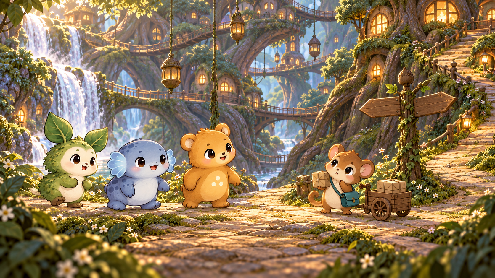
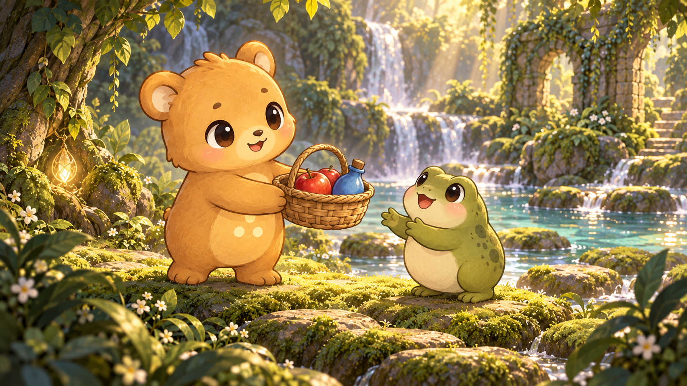
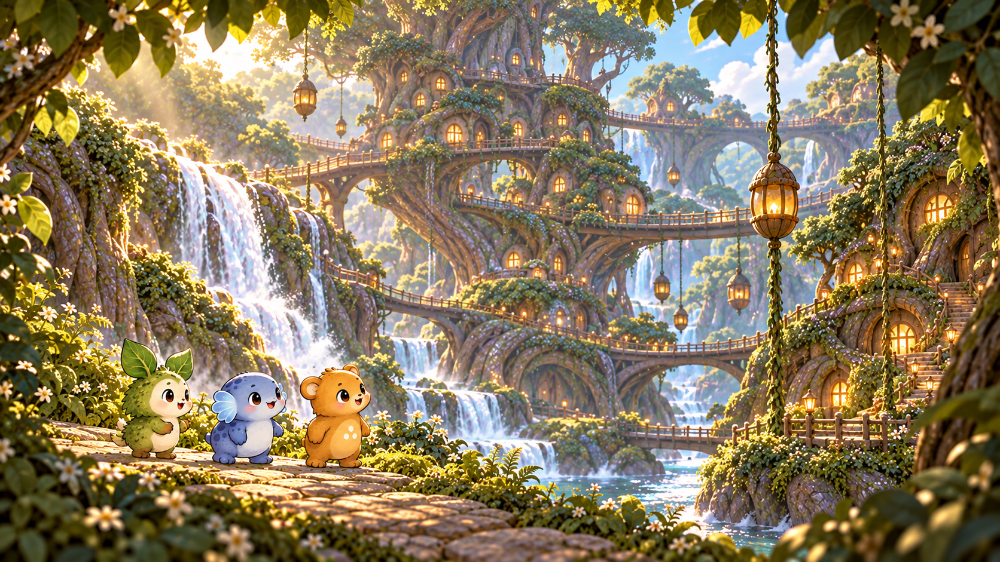

← Full storybookVideo 2 · After stage 5 · Revised 18-second story
Beyond the waterfall,
a village needs us.
18-second generated draft · Separate wordless soundtrack · Hebrew/English captions · Three generation attempts, estimated $7.20; actual billing not exposed.
A new place to explore. A courier with a problem. A reason to learn what everyone needs.

New scene reference — a still illustration, not a generated video. The courier will return as our workshop host and at the finale.
1 · The gift opens a path
The forest responds
Keep the gift brief: Zohar offers the filled basket; the river resident recognizes the supplies. Light runs from the basket through the roots toward a curtain of leaves. The resident pulls it aside, revealing the entrance to a new place.
Our gift opened a new path.
המתנה שלנו פתחה שביל חדש.
2 · A world to discover
Life among the roots
A wide reveal opens onto a village built among enormous roots: little bridges, warm round windows and seed-shaped lifts. Nevet, Adva and Zohar enter along the lower path, small against the inviting architecture. One seed lift glides upward, making the place feel alive.
A whole village was waiting beyond the waterfall.
כפר שלם חיכה מעבר למפל.
3 · Someone needs us
Which way now?
At a fork beside the village entrance, a small dormouse courier pulls a wooden parcel cart to a stop. It looks down one path, then the other, checks the parcels and makes an exaggerated puzzled face. Adva starts to point one way, pauses, and looks back at the others. They gather around the cart to help; do not reveal the correct route.
The courier needs help. Let’s go!
השליח צריך עזרה. בואו נצא לדרך!
Source images for the generated video
Three scene images · three six-second shots · one generated candidate per shot.

1 · The gift
2 · The reveal3 · The courierExact prompts and upload images
The adventure keeps changing.
Every milestone pays off what the child learned, changes the world, and opens the next question.
Before stage 1A request we don’t yet understandThe player has someone to help and a destination to discover. The first five activities are small acts of understanding.
After stage 5The village behind the waterfallThe hidden root village becomes visible and accessible. The courier joins the ongoing story with a concrete delivery problem.
After stage 10The bridge wakes upDeliveries reconnect the village and open a permanent river crossing to the workshop.
After stage 15The map inside the workshopThe courier becomes our host. The friends discover why the tree matters and where the missing connection lies.
After stage 20A light across the crystal waterThe third community is reachable and the entrance to the great tree is found.
After stage 25The tree opens its doorsThe destination is reached. The hall can now reach the communities we helped.
After stage 30All paths lead hereThe restored routes now bring real friends together. The final activities complete a shared event instead of another isolated errand.
After stage 35The last lightThe child can see two parts of the final transformation already working. One familiar activity remains before the full reveal.
After stage 36The forest understandsThe restored map and unlocked video album remain. Favorite learning activities can be revisited without requiring another quest.
Language drives the adventure. The next activities help identify the objects people request for deliveries. The existing learning games carry the challenge; bridges, lifts and parcel routes are story events.
The original garden concept remains saved. The two-shot generation job is superseded. Three approved video calls have now produced this draft.
Revised production plan · Agent storybook · Opening video